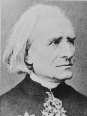

Aşırılığın, çöküşün ve dehâya tapınışın romantik hissedişi, iki erken dönem romantik çağ virtüözünün, Niccolo Paganini (1782-1840) ve Franz Liszt’in (1811-1886) kariyerlerinde canlı bir şekilde kendini gösterir.
Zayıf görünümlü, İtalyalı usta bir kemancı olan Paganini, keman çalmada o kadar iyiydi ki, kısmen uzun, karmaşık teknik geçişler gibi harikulâde becerilerinden dolayı şeytanla bir anlaşma yapmış olmakla bile suçlandı. Paganini’nin şöhreti, dinleyiciler arasındaki kadınları cezbettiği ve eleştirmenlerin ağzını açık bıraktığı 1828’deki bir Paris resitalinde başladı. Ancak Paganini, büyük bestelerinin bir repertuarını geride bırakmadan Nice’de öldü. Diğer virtüözler gibi eserlerinin çoğu, aşırı hızdaki solo bölümleri ve varsa minimal eşlikli başka becerilerini göstermeyi amaçlardı. Sadece ikisinin düzenli olarak çalındığı altı keman konçertosu yazdı.

Son derece yetenekli bir Macar piyanist olan Franz Liszt, Paris’e 1824’te vardığı zaman, Paganini’nin çalışından o kadar etkilenmişti ki tekniğini çalışmak için iki yıl kendisini kapatarak “Piyanonun Paganinisi” olmak istedi. Liszt, sonunda hedefine ulaştı ve sahne almaya başladı; doğuştan bir sahne insanı olduğu açıktı. Müziğin doğaüstü deneyiminde tamamen kaybolduğu izlenimini vermek için sahnesinin sonunda çoğunlukla isterik bir görünüşün taklidini yapardı. Liszt’in hareketleri kadınlar üzerinde işe yaradı. Liszt’in, kontes Marie d’Agoult ve sonraları evlendiği ve onu sessiz bir Katolik dindara dönüştüren Rus prensesi Caroline de Sayn-Wittgenstein’ın da içinde olduğu Paris’in kendinden geçen üst tabakası arasında birçok âşığı vardı.
Her şeyden çok bu iki besteci ve solocu, romantik müziğin merkezini besteden ziyade sahneye kaydırdı ve bu şekilde davranarak klasik estetiği olduğundan daha da ileriye çektiler.
EK BİLGİLER:
1. Paganini en ünlü numarasını yaparken, o kadar hiddetli çalıyordu ki tellerinden üçünü kopardı; ama yalnızca birini kullanarak çalmaya devam etti.
2. Paganini çocukken, parmaklarının kavrama gücünü arttırmak için ellerini sakatladı.
3. Hayatının geç dönemlerinde Liszt, kızlarla gönül eğlendirme günahlarını Papa’nın bizzat kendisine itiraf etti. Papa itiraf sırasında besteciyi yarıda kesti ve “Yeter, Liszt! Günahlarını piyanona anlat.” dedi.